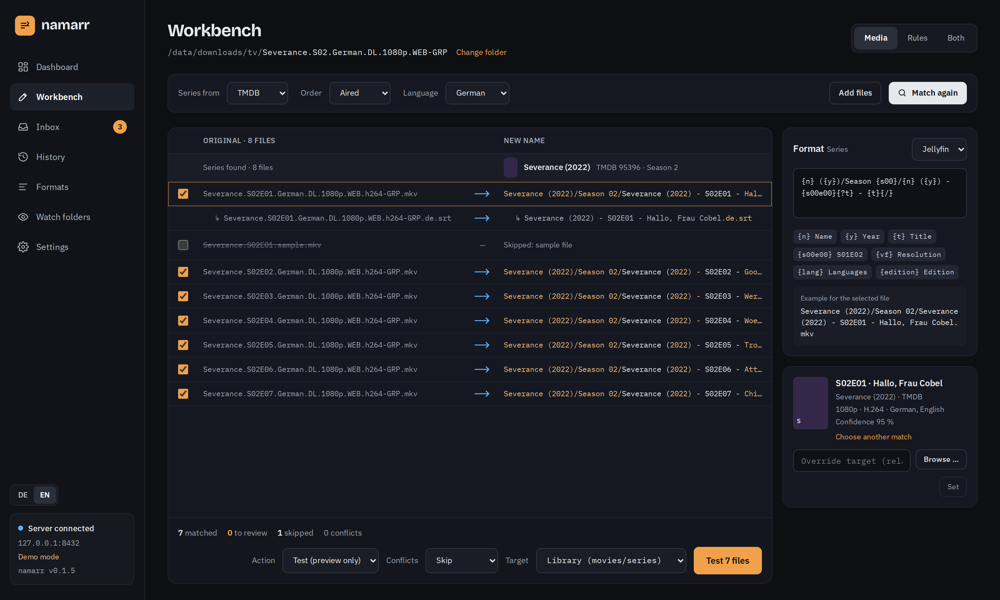

namarr
TMDB
TheTVDB
TVmaze
AniDB
The self-hosted renamer for
movies, series and anime
. Preview first, undo anything.
Severance.S02E01.German.DL.1080p.WEB.h264-GRP.mkv
→
Severance (2022)/Season 02/
Severance (2022) - S02E01 - Hallo, Frau Cobel.mkv
